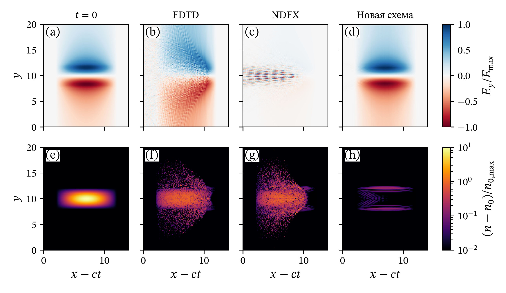

Анализ устойчивости:
Ищется решение в виде плоских волн $\mathbf{E}=\mathbf{E}_0 \exp{(-i\omega t+i\mathbf{kr})}$ в вакууме ($\mathbf{j}=0$)
$$\hat{A}F_0=0 \qquad F_0=(E_{0,x},E_{0,y},E_{0,z},B_{0,x},B_{0,y},B_{0,z})^{T}$$Из условия $\text{det}\hat{A}=0$ находится дисперсионное соотношение $\omega(\mathbf{k})$. Схема считается устойчивой при $\mathrm{Im}(\omega) =0$.
$$\omega = \pm \frac{2}{\Delta t} \arcsin{\left(\Delta t \sqrt{{A_x}^2+{A_y}^2+{A_z}^2} \right)},\ A_\alpha = \frac{1}{\Delta\alpha}\sin{\frac{k_\alpha\Delta \alpha}{2}} \left( a_{0,\alpha}+a_{1,\alpha}\cos{(k_\alpha\Delta\alpha)} \right)$$Новая схема $a_{1,\alpha} = \frac{1}{2} \left( 1 - \frac{\Delta \alpha}{\Delta t} \sin{ \left[ \frac{\pi}{2} \frac{\Delta t}{\Delta \alpha} \right]} \right),\ a_{0,\alpha} = 1 -a_{1,\alpha}$:
$$\sin^2 \left( \frac{\pi}{2} \frac{\Delta t}{\Delta x} \right) + \sin^2 \left( \frac{\pi}{2} \frac{\Delta t}{\Delta y} \right) + \sin^2 \left( \frac{\pi}{2} \frac{\Delta t}{\Delta z} \right) < 1$$FDTD
$a_1=0, a_0=1$:
Результаты моделирования распространения пучка электронов в вакууме:
Результаты моделирования распространения лазерного импульса в вакууме:
$$ \varepsilon = \sqrt{\frac{\iiint \left( E_y - E_{y, NDFX} \right)^2 \mathrm{d}x \mathrm{d}y \mathrm{d}z}{\iiint E_{y, NDFX}^2 \mathrm{d}x \mathrm{d}y \mathrm{d}z}} \qquad \Delta x=0.015\lambda $$